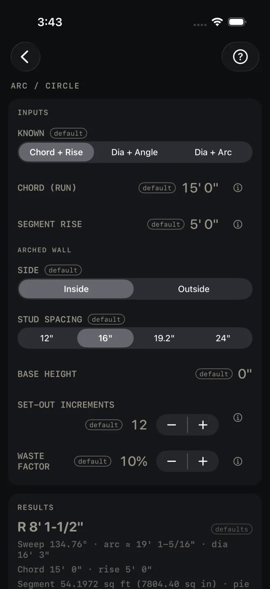
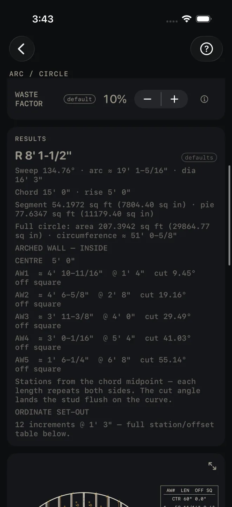
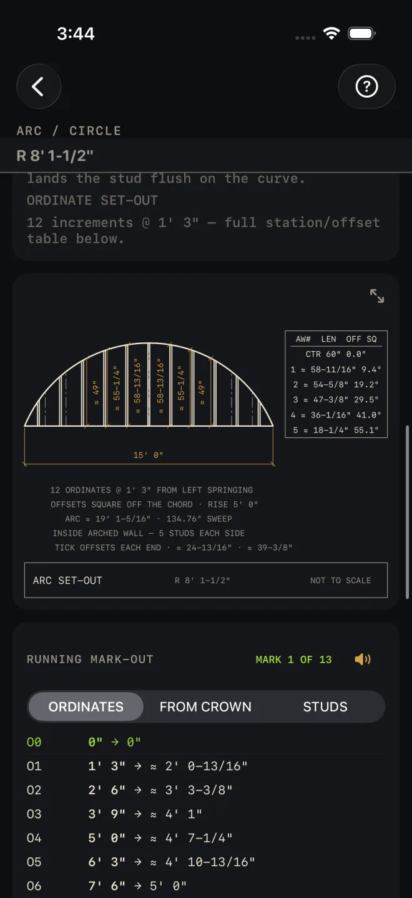

Arc / Circle
What it's for
Finding the radius of a curve you can only measure across, and setting it out without reaching the centre of the circle. You walk away with the radius, the sweep and arc length, a stud-by-stud schedule for an arched wall with the top cut angle for each stud, a table of ordinates to mark the curve from the chord, and a printable template or set-out sheet. It is geometry, not a code check.
Step by step
The example is the screen as it opens: an arch 15' 0" across that rises 5' 0" at the middle, framed on the inside with studs at 16".

1 2 3 5 7- KNOWN — which two things you can measure. Chord + Rise is the one you can take off a wall or an opening with a tape. Dia + Angle and Dia + Arc are covered below. Leave it at Chord + Rise.
- CHORD (RUN) — the straight line between the two ends of the arc, not the length of the curve. Measure springing to springing. 15' 0" here.
- SEGMENT RISE — how high the arc stands above the chord at the middle. Measure square off the chord at its midpoint. 5' 0" here.
- Under ARCHED WALL, SIDE — Inside frames the space between the chord and the curve. Outside frames above the curve, up to a level line at the crown.
- STUD SPACING — 12", 16", 19.2" or 24" on centre.
- BASE HEIGHT — added to every stud, for an arch that sits on top of a straight wall. It opens at 0".
- SET-OUT INCREMENTS — how many equal stations along the chord you will measure the curve up from. More stations give a smoother curve. 12 here.
- WASTE FACTOR — added to the materials you buy by the foot or the sheet. It does not change any dimension. It opens at 10%.
- Read RESULTS: R 8' 1-1/2", Sweep 134.76° · arc ≈ 19' 1-5/16" · dia 16' 3".
- Read the stud schedule under ARCHED WALL — INSIDE: CENTRE 5' 0", then AW1 ≈ 4' 10-11/16" @ 1' 4" cut 9.45° off square, and on out to AW5.
- Check the drawing: the arch with its studs on the 15' 0" chord, and the stud table beside it.
- Set the curve out with the RUNNING MARK-OUT card.
- Print the template or the set-out sheet.
- Read MATERIALS, then use the buttons at the foot of the screen.

9 10The other two ways in
Dia + Angle swaps the first two inputs for DIAMETER and ARC ANGLE, the sweep in degrees. Dia + Arc asks for DIAMETER and ARC LENGTH, the distance measured around the curve. Use them when the drawings give you the circle. Everything below the first two inputs works the same way.
Reading the results
The headline is the radius. It also shows in a strip under the title whenever the results card is scrolled off screen. A ≈ in front of any figure means it has been rounded for display.
The circle figures. Sweep, arc length and diameter. Chord and rise. The area of the segment (between chord and curve) and of the pie slice back to the centre, each in square feet and square inches. The area and circumference of the full circle.
Arched wall. CENTRE is the stud on the chord midpoint. AW1 is the first stud out from it, AW2 the next, and so on. Each line gives the cut length, the station measured from the chord midpoint, and the top cut in degrees off square. The note under the list says it: each length repeats on both sides, and the cut angle lands the stud flush on the curve. So AW1 is two studs, one each side.
Ordinate set-out gives the number of increments and their spacing — 12 increments @ 1' 3" here. The table itself is in the mark-out card.
There is no pass or fail on this screen and nothing turns red.

11 12The drawing shows the arch on its chord with every stud drawn, and a table of stud lengths and cut angles in the corner. Pinch to zoom in on the table, or tap the expand button at the top right to open the drawing full screen. See Reading the drawing.
The mark-out card has three tapes:
- ORDINATES — hook one end of the chord. At each station, square off the chord by the second figure and mark the arc. In the example O1 is 1' 3" along and ≈ 2' 0-13/16" up. Join the marks with a batten. No circle centre needed.
- FROM CROWN — the same curve measured down from a level line struck at the crown. Use it when you can reach the top line and not the chord.
- STUDS — stud centres, hooked from the chord midpoint, the same both ways.
Tap ✓ MARKED — NEXT after each mark to keep your place. How the card works, and how to have it read the marks aloud, is in Mark-out and speak.
 12
13
14
12
13
14
The template card tells you which sheet you will get before you spend the paper.
- TEMPLATE — FITS AT 1:1 — the curve is small enough to print at true size on one page. The button reads PRINT 1:1 TEMPLATE — 100% SCALE, DO NOT FIT TO PAGE. Print at 100% and measure the 1" check square on the sheet before you trace anything.
- TEMPLATE — TOO BIG FOR 1:1 — as in the example, where a 15' 0" × 5' 0" arch would need 1 : 24.4. The calculator will not print a shrunken curve, because a curve traced off a reduced print is scrap. The button reads PRINT SET-OUT SHEET and the sheet carries the ordinate table instead.
More on printing true to size is in Cut sheets and 1:1 templates.
Materials. The stud line is a net count — 11 pcs here, five each side and the centre stud — with no waste added, because every stud is a different length and a spare fits no station. The curved plate line is the arc length plus your waste, and its name tells you how wide a straight board has to be to cut that curve out of it. Read the whole line before you buy plate stock.
The buttons. CUT SHEET shares a PDF with the drawing, every figure, the stud schedule and the ordinates. The list icon at the right end of the same button shares the material list alone. SAVE puts the job in History. CUT LIST starts a checkable cut list on the Lock Screen and SEND LIST sends one. The cut list is not the same as the material list: it breaks the stud line out one row per stud length, two of each and one centre stud, so you can tick them off at the saw. CUT SHEET, the list icon in it, CUT LIST and SEND LIST stay dim until you change at least one input. SAVE stays lit, but while every input is still a default a tap only answers Enter your job's numbers first and saves nothing.
Common mistakes
- Entering the length around the curve as CHORD (RUN). The chord is the straight line between the ends.
- Measuring SEGMENT RISE off the floor. It is measured from the chord. If the arch sits on a straight wall, the wall's height goes in BASE HEIGHT.
- Cutting one of each stud. The schedule lists one side of the wall. Every AW length is cut twice.
- Letting the printer fit the 1:1 template to the page. Print at 100% and check the 1" square.
Related
- Mark-out and speak
- Cut sheets and 1:1 templates
- Cut list on the Lock Screen and widgets
- Angle Tools — for setting the stud top cuts
- Framing and Rough Opening — the wall the arch sits in
- Saving and History
- Reading the drawing